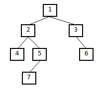

日志
题目：输入一棵二叉树的根结点，判断该树是不是平衡二叉树。如果某二叉树中任意结点的左右子树的深度相差不超过1，那么它就是一棵平衡二叉树。例如下图中的二叉树就是一棵平衡二叉树：

在本系列博客的第27题，我们曾介绍过如何求二叉树的深度。有了求二叉树的深度的经验之后再解决这个问题，我们很容易就能想到一个思路：在遍历树的每个结点的时候，调用函数TreeDepth得到它的左右子树的深度。如果每个结点的左右子树的深度相差都不超过1，按照定义它就是一棵平衡的二叉树。这种思路对应的代码如下：
bool IsBalanced(BinaryTreeNode* pRoot)
{
if(pRoot == NULL)
return true;
int left = TreeDepth(pRoot->m_pLeft);
int right = TreeDepth(pRoot->m_pRight);
int diff = left - right;
if(diff > 1 || diff < -1)
return false;
return IsBalanced(pRoot->m_pLeft) && IsBalanced(pRoot->m_pRight);
}
上面的代码固然简洁，但我们也要注意到由于一个节点会被重复遍历多次，这种思路的时间效率不高。例如在函数IsBalance中输入上图中的二叉树，首先判断根结点（值为1的结点）的左右子树是不是平衡结点。此时我们将往函数TreeDepth输入左子树根结点（值为2的结点），需要遍历结点4、5、7。接下来判断以值为2的结点为根结点的子树是不是平衡树的时候，仍然会遍历结点4、5、7。毫无疑问，重复遍历同一个结点会影响性能。接下来我们寻找不需要重复遍历的算法。
如果我们用后序遍历的方式遍历二叉树的每一个结点，在遍历到一个结点之前我们已经遍历了它的左右子树。只要在遍历每个结点的时候记录它的深度（某一结点的深度等于它到叶节点的路径的长度），我们就可以一边遍历一边判断每个结点是不是平衡的。下面是这种思路的参考代码：
bool IsBalanced(BinaryTreeNode* pRoot, int* pDepth)
{
if(pRoot == NULL)
{
*pDepth = 0;
return true;
}
int left, right;
if(IsBalanced(pRoot->m_pLeft, &left)
&& IsBalanced(pRoot->m_pRight, &right))
{
int diff = left - right;
if(diff <= 1 && diff >= -1)
{
*pDepth = 1 + (left > right ? left : right);
return true;
}
}
return false;
}
我们只需要给上面的函数传入二叉树的根结点以及一个表示结点深度的整形变量就可以了：
bool IsBalanced(BinaryTreeNode* pRoot)
{
int depth = 0;
return IsBalanced(pRoot, &depth);
}
在上面的代码中，我们用后序遍历的方式遍历整棵二叉树。在遍历某结点的左右子结点之后，我们可以根据它的左右子结点的深度判断它是不是平衡的，并得到当前结点的深度。当最后遍历到树的根结点的时候，也就判断了整棵二叉树是不是平衡二叉树了。
博主何海涛对本博客文章享有著作权。网络转载请注明出处http://zhedahht.blog.163.com/。整理出版物请和作者联系。对解题思路有任何建议，欢迎在评论中告知，或者加我微博http://weibo.com/zhedahht或者http://t.163.com/zhedahht与我讨论。谢谢。


 转发至微博
转发至微博
转发至微博
转发至微博
 3人 |
分享到：
3人 |
分享到：
历史上的今天
- 程序员面试题精选100题(38)-输出1到最大的N位数[算法]2009-05-27 09:42:06


评论
涛哥，我想知道，你的第二种做法 跟非递归的方式 性能一样吗？动态规划法用非递归的方式先保存计算得到的值，以免重复计算……
int left, right;
if(IsBalanced(pRoot->m_pLeft, &left)
&& IsBalanced(pRoot->m_pRight, &right))
left的值怎么得到啊？&left这是引用嘛？
如果左边不平衡，右边就直接跳过不做了。
static int lft = 0, rght = 0;
bool balance = true;
int check(node* root)
{
if(!balance) return 0;
if(root ->left) lft += check(root ->left);
if(root ->right) rght += check(root ->right);
if(abs(lft - rght) > 1)
{
balance = false;
return 0;
}
return 1;
}
这个行不
按照定义的表达也就是两者的绝对值小于等于1，所以何老师的表达是正确的。
思路二考察了后序遍历和性质和递归思想，赞一个